About
Brand identity, music infrastructure, merch operations, and web presence — built from scratch for an independent band.
More than the music...
I joined The Cattledogs in 2024 when one of the founding members left. We were still developing our sound and identity, and I took on the role of creating a visual identity for the band. It evetually became important to "build the band" as well as the music, including the business infrastructure, merch operations, and web presence.
Making the Music
Writing, Recording, and Finding the Sound
From the beginning the writing was a very collaborative process. We always met to flesh out existing ideas and concepts, tweaking them as we went. Recording helped us further refine our sound, as we could hear the songs and possibilities in a new way.
Through the production and mixing process, I aimed to create a sound that felt true to our sound on stage and the energy of the live shows. I aimed to try and mimic the feel of classic bands like Fleetwood Mac and Steely Dan, with the inherent modernity of modern recording technology. All live recordings, I aimed for as natural a sound as possible, with relatively minimal effects.
Visual Identity / Branding
A Modern Throwback
I wanted to create a visual identity that felt like it mirrored the music, inspired by sounds of the 70s and 80s,but also modern and fresh. I started with a logo that was a stylized version of the band's name, and then added a faded, rusty color palette. I also wanted to create a visual identity that was unique to the band, so I didn't want to use any existing logos or branding.
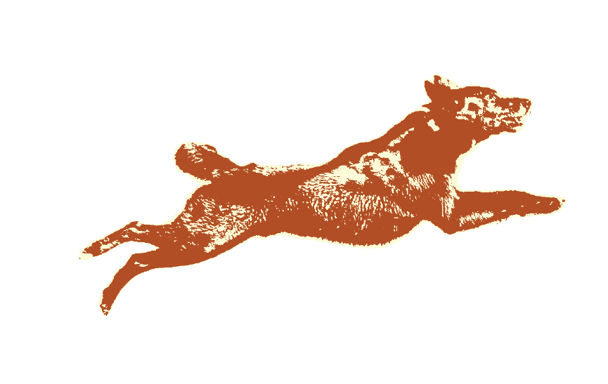
Merch Operations
Designing and Selling Merch
I designed and sold merch for the band, including t-shirts, stickers, and other items. I also coordinated with vendors to get the best prices and quality for the band. I also created a website to sell the merch, and I also created a social media presence for the band to promote the merch.
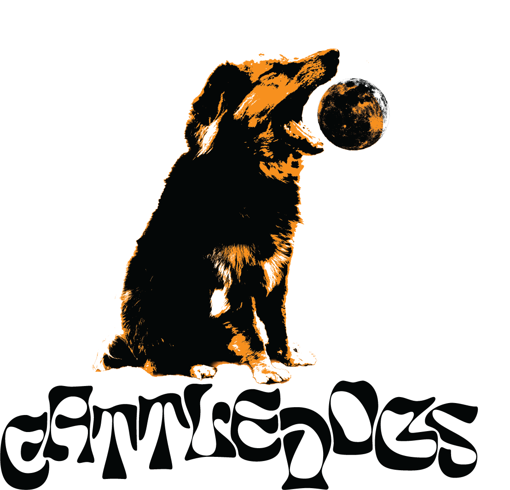
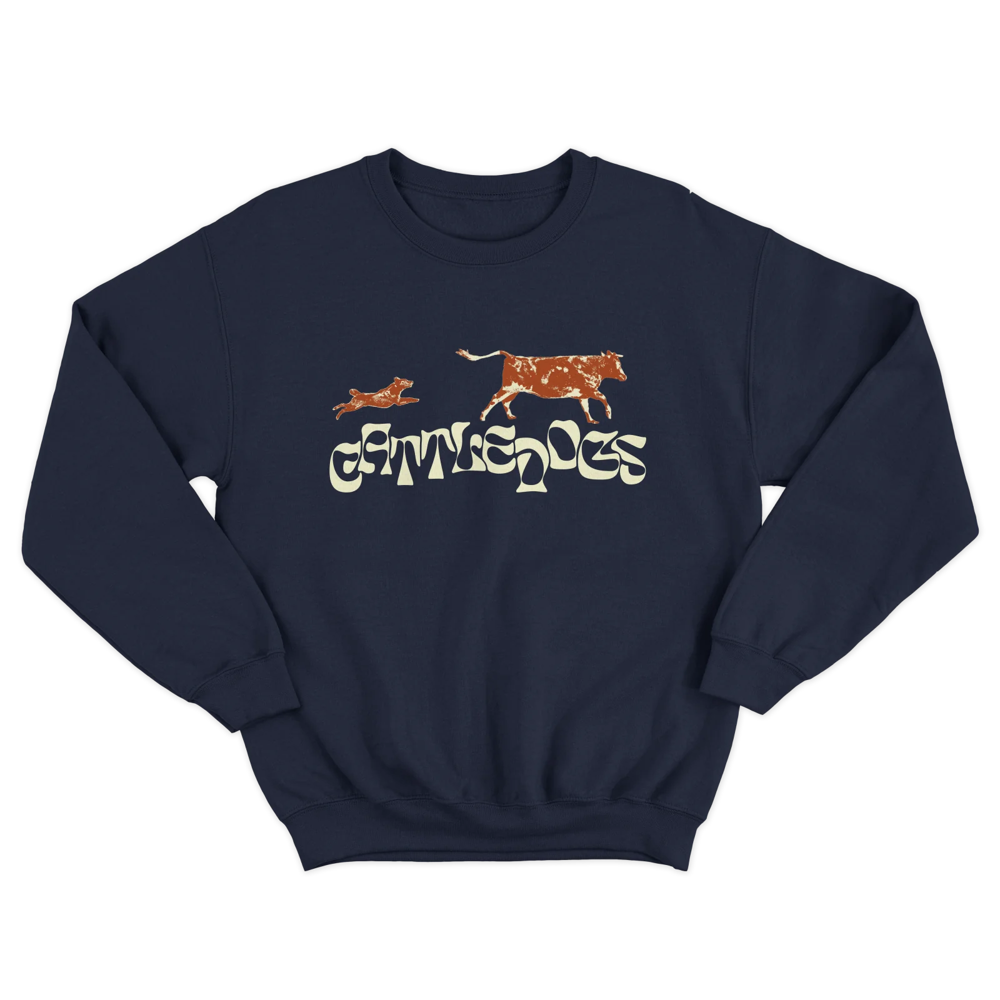
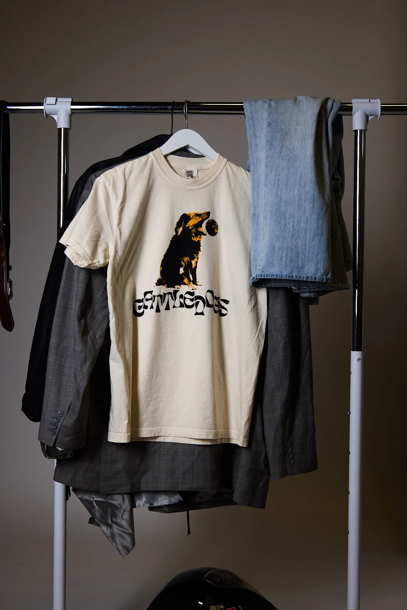
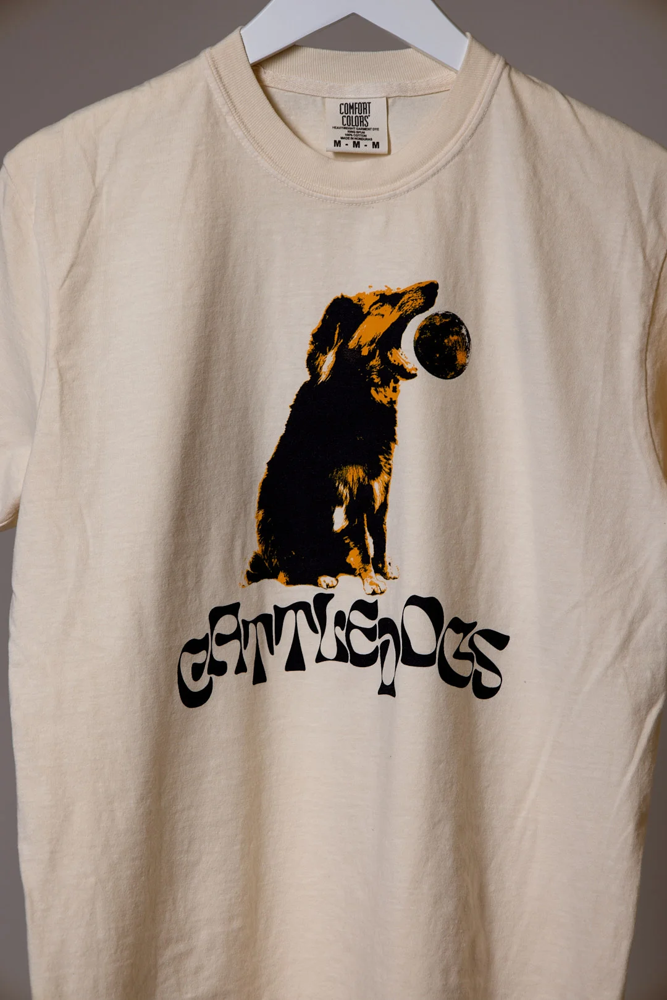
Business Infrastructure
Royalties and Accounting
I helped the band set up their release and royalties collection system. This ensures that we can always be getting paid for our work, including streaming, sync placements, live shows, and other revenue streams.
- Distribution setup for streaming and sync placements
- Accouting for merch sales and other revenue streams
- Booking and managing live shows
Web Presence
A Home for the Band
I created a website for the band to showcase their music, merch, and other content. Designed to match the visual identity of the band, it features an upcoming show calendar that is easy to update, as well as hooks for mailing lists and music streaming.
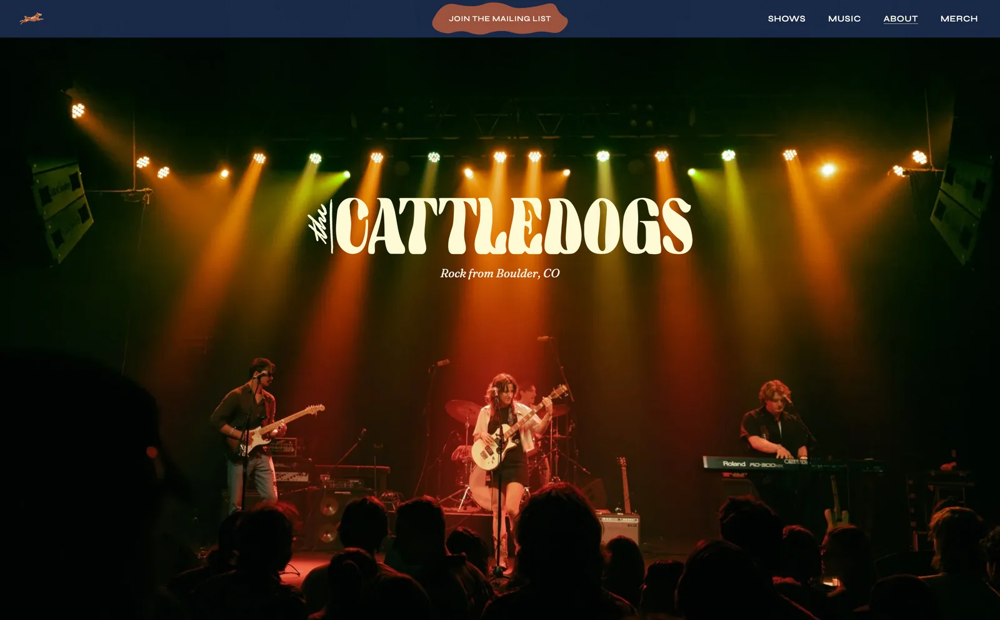
Content & Campaign Work
Posters, Posts, and Show Promotion
This was my favorite part of the project. I was able to create posters, social media assets, and other content to help promote our music and shows. I aimed to create content for every medium, including posters, social media posts, and story posts.
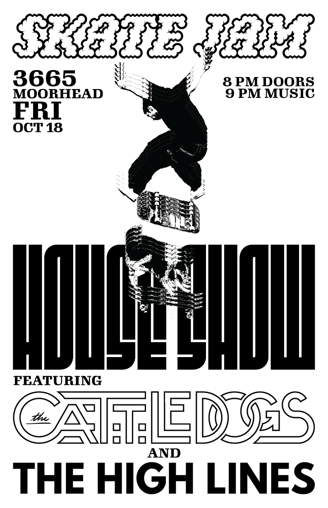
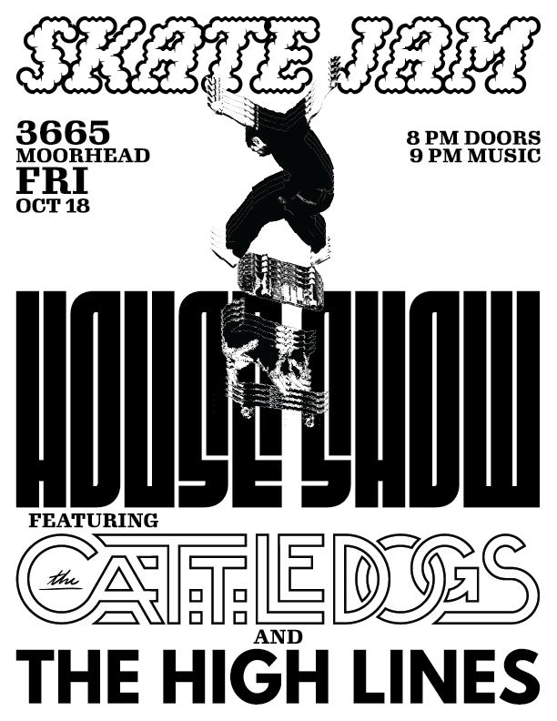
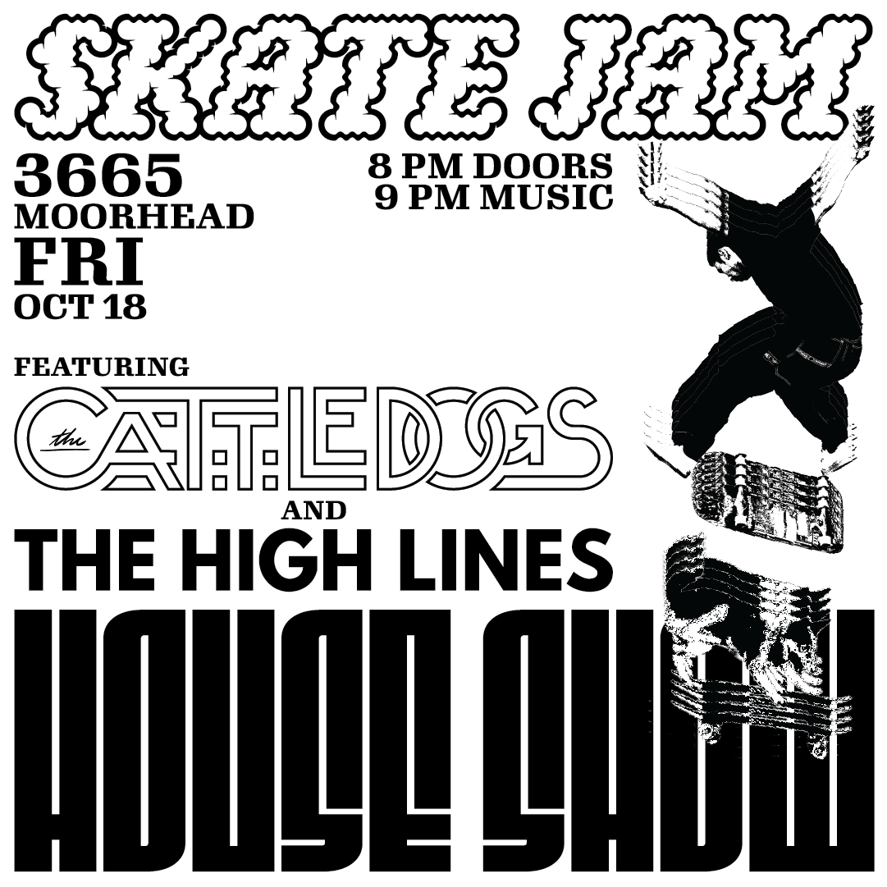
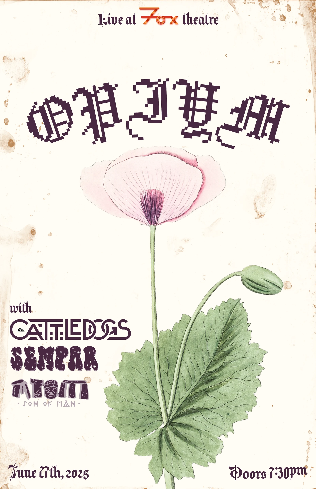
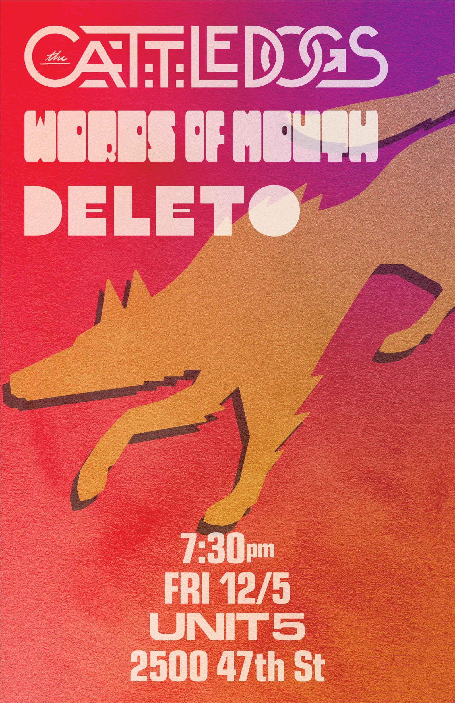
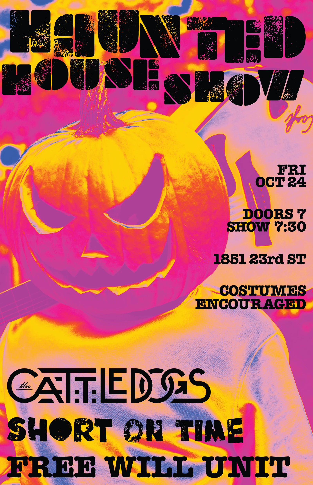
Reflection
Passion made Real
This project was a huge learning experience for me. I learned so much about the business side of music, and how to try and create a cohesive image across so many mediums and platforms. Being in complete control of the project made it so much more involved than a typical freelance project, especially because I have a vested interest in the music and the band's image. I'm proud of what we have been able to accomplish, and I'm excited to see where we go from here, especially once we get an album out and start playing more shows again.